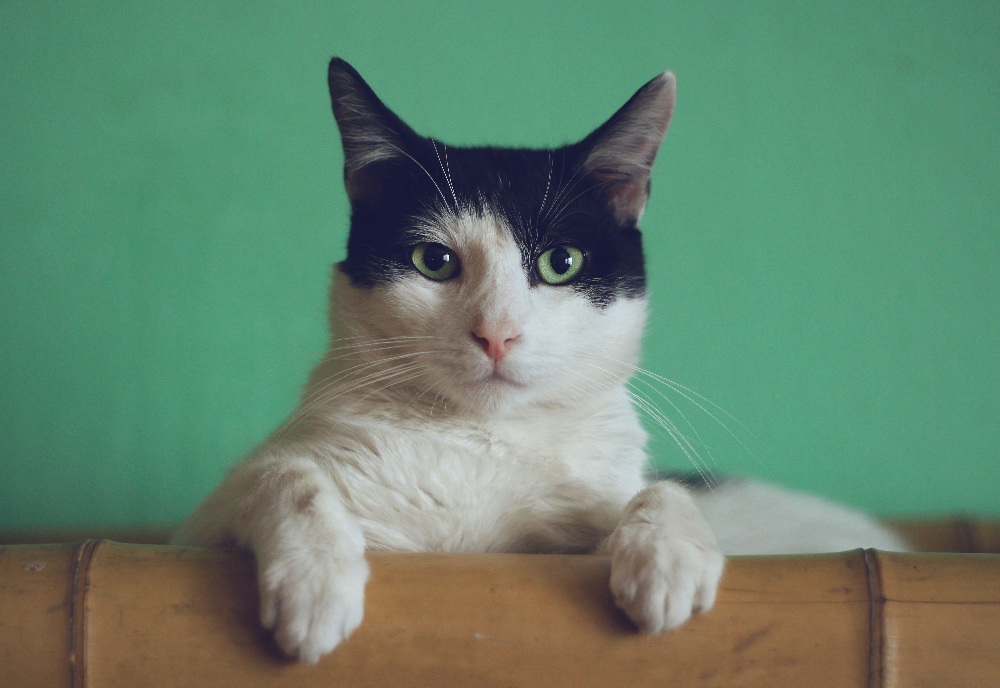
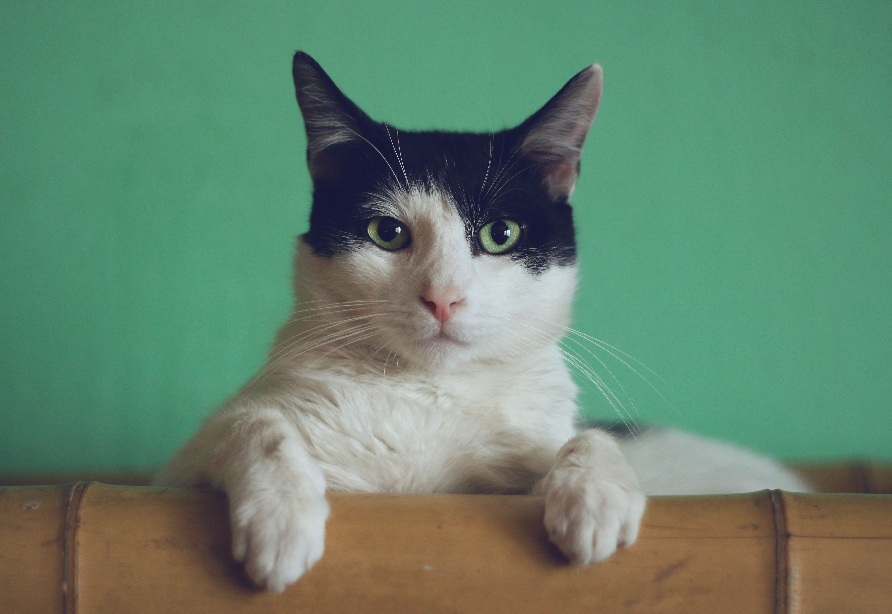

响应式图像
- 设备宽度不超过799 显示橘猫
- 设备宽度超过800 显示小猫
图像大小
- 在dpr为1宽度不超过600像素的设备，图像显示橘猫
- 在dpr为1宽度超过600像素的设备，图像显示小猫猫
srcset属性：srcset属性用来指定多张图像，适应不同像素密度的屏幕。它的值是一个逗号分隔的字符串，每个部分都是一张图像的 URL，后面接一个空格，然后是像素密度的描述符或宽度描述符 如 300w 描述宽度为300的图片
srcset属性：srcset属性用来指定多张图像，适应不同像素密度的屏幕。它的值是一个逗号分隔的字符串，每个部分都是一张图像的 URL，后面接一个空格，然后是像素密度的描述符或宽度描述符 如 300w 描述宽度为300的图片
